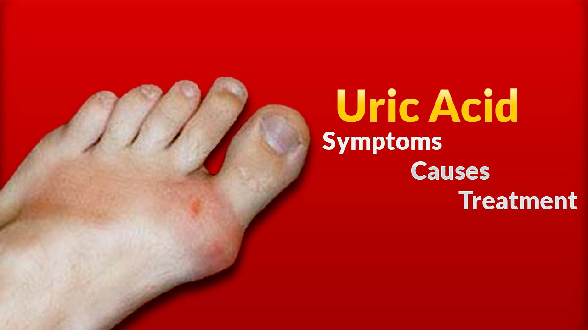

خون میں یورک ایسڈ کی زیادتی HYPERURICEMIA تولیدِ مرض ، اسباب ، علامات ، غذا و پرہیز اور علاج کےحوالہ سے خصوصی تحریر یورک ایسڈ کی زیادتی کیوں ھوتی ھے؟ اور اس کی زیادتی سے کیا علامات اور مرض پیدا ھوتا ھے؟ اور اس کا طب یونانی ،ہربل میڈیسن میں علاج کیا ھے؟ یورک ایسڈ(Uric Acid) ایک قسم کا نامیاتی ترشہ(Organic acid) ۔ جس کا تعلق پیورین گروہ(Purines Group) سے ہے۔اسکا کیمیائی فارمولا C5H4N4O3 ہے اور اس کا سالماتی یا مالیکو لر وزن169(Molecular Weight 169) ہے ۔ یورک ایسڈ بے رنگ قلمی ٹھوس یا کرسٹل(Crystal) کی طرح ہوتا ہے ۔ اور یہ پان ی میں حل ہو جاتا ہے ۔ یورک ایسڈ خلیے (Cell) کے اندرونی حصے یا نیو کلئر پروٹینز(Nucleoproteins) کے اجزاء پیورنیز(Purines) جس میں ایڈی نین (Adenine) ، گوانین (Guanine)اور زینتھین(Xanthine)وغیرہ شامل ہیں ان کی بافتوں میں توڑ پھوڑ سے بننے والی آخری شئے ہے ۔ پیورین کو جسم میں تالیف یا تیار(Synthesize) بھی کیا جا سکتا ہے ۔ اور یہ بذریعہ خوراک بیرونی ذرائع سے بھی انسانی جسم میں آتی ہیں۔ پیورینز کی توڑ پھوڑ سے یورک ایسڈ بنتا ہے یا یوں کہہ لیں کہ یورک ایسڈ پیورینز کی بہت ضروری ہیں۔ جب یہ یورک ایسڈ جسم میں اپنی نارمل مقدار سے بڑھ جا ئے تو یہ جوڑوں میں درد خاص طور پر چھوٹے جوڑوں میں تہہ نشین ہو کر جوڑوں می ں سوجن ورم اور درد پیدا کرتا ہے مردوں میں یورک ایسڈ کی نارمل مقداردواعشاریہ پانچ سے سات اعشاریہ پانچ ملی گرام فی ڈیسی لیٹر( 2.5to 7.5 mg/dL ) ہوتی ہےاورعورتوں میں اسکی نارمل مقدار(1.5to6 mg/dL) تک ہوتی ہے۔میں نے اپنے ذاتی مشاہدے میں دیکھا ہے کہ کئی اف راد میں جب یورک ایسڈ (5to 6 mg/dL) تک بھی ہو جائے تو انہیں جوڑوں کا درد شروع ہو جاتا ہے ۔ اور بعض اوقات یورک ایسڈ زیادہ ہونے کے باوجود بھی کوئی خاص علامات ظاہر نہیں ہوتیں۔